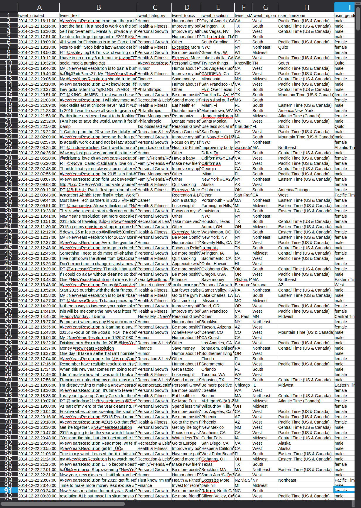

Computer Processing
of Data
hello
last time:
- writing formulas
- referencing data
- using functions
today:
we start doing real analysis
Warning
Things are getting a little more complex
| name | group | grade | present |
|---|---|---|---|
| alice | a | 14 | true |
| bob | b | 8 | true |
| chloé | a | 17 | false |
| david | b | 11 | true |
| emma | a | 9 | true |
| farid | b | 15 | false |
| gabriel | a | 13 | true |
| hana | b | 6 | true |
| inès | a | 18 | true |
| jules | b | 10 | false |
Today’s table
| name | group | grade | present |
|---|---|---|---|
| alice | a | 14 | true |
| bob | b | 8 | true |
| chloé | a | 17 | false |
We will try to answer:
- Who passed? (level 1)
- How many students passed? (level 2)
- What is the average grade among those who passed? (level 3)
- Which group performs best? (level 4)
A formula is no longer enough
- Who passed? (level 1)
- How many students passed? (level 2)
- What is the average grade among those who passed? (level 3)
- Which group performs best? (level 4)
=AVERAGE(C2:C11)
15
But…
That does not answer any of our questions…
A simple calculation is no longer enough
We need to be able to:
- make decisions
- count according to a criterion
- look up information
- summarize a large table
Today
we are going to learn
to ask questions
of our data.
But first
A short quiz
What does this formula return?
=MAX(B2:B10)
A. The smallest value
B. The largest value
C. The average
D. The number of cells
Which one is a valid formula?
A. AVERAGE(B2:B10)
B. =AVERAGE(B2:B10)
C. B2:B10
D. SUM=B2:B10
A formula can manipulate…
A. numbers only
B. text only
C. cells only
D. numbers, text, dates…
BLOCK 1
We are going to study three important functions
IF
COUNTIF
VLOOKUP
Level 1
Who passed?
What if not every row should produce the same result?
Example
| Name | Grade |
|---|---|
| Alice | 14 |
| Bob | 8 |
| Chloé | 17 |
We would like to display:
Passed or Failed
A standard formula
=AVERAGE(B2:B4)
13
But…
everyone gets the same calculation…
We need to make a decision
IF
If a condition is true
do one thing
Otherwise
do something else
The function
IF
=IF(condition ; value_if_true ; value_if_false)
Example
| A | B | |
|---|---|---|
| 1 | Name | Grade |
| 2 | Alice | 14 |
| 3 | Bob | 8 |
| 4 | Chloé | 17 |
=IF(B2>=10 ; “Admis” ; “Ajourné”)
=IF(B2>=10 ; “Admis” ; “Ajourné”)
B2 = 8 Failed
B2 = 12 Passed
Conditions use
| Operator |
|---|
> |
< |
= |
>= |
<= |
<> |
These operators return
TRUE
or
FALSE
Several examples
=IF(B2=”A”;…) compares text
=IF(C2>=10;…) compares a number
=IF(D2=TRUE;…) compares a state
A condition
allows us
to make a decision
based on a data value.
What will this formula return?
=IF(B2=“A” ; “Groupe A” ; “Autre groupe”)
If B2 contains B:
A. Group A
B. Another group
C. B
D. Error
What will this formula return?
=IF(B2<>“A” ; “Jean” ; “Bond”)
If B2 contains B:
A. Jean
B. Bond
C. Ham
D. Error
BLOCK 2
Level 2
How many students passed?
What if we wanted to count only the data we are interested in?
Example
| Name | Group | Grade |
|---|---|---|
| Alice | A | 14 |
| Bob | B | 8 |
| Chloé | A | 17 |
| David | B | 11 |
Question:
How many students
are in group A?
By hand?
Alice ✔
Bob ✘
Chloé ✔
David ✘
2
Easy!

But what if you have 200 people to count?…
The function
COUNTIF
=COUNTIF(range ; criterion)
will do it for you.
| A | B | C | |
|---|---|---|---|
| 1 | Name | Group | Grade |
| 2 | Alice | A | 14 |
| 3 | Bob | B | 8 |
| 4 | Chloé | A | 17 |
| 5 | David | B | 11 |
=COUNTIF(B2:B11 ; “A”)
B2:B11 where to search
“A” what to count
Examples
=COUNTIF(B2:B11;”A”)
=COUNTIF(C2:C11;”>=10”)
=COUNTIF(D2:D11;TRUE)
COUNTIF
allows us to answer
a counting
question.
What does this formula return?
=COUNTIF(B2:B11;“A”)
A. The number of students in group A
B. The average for group A
C. The grade for group A
D. A pizza 🍕
What does this formula count?
=COUNTIF(C2:C11;“>=10”)
A. Students with a grade of at least 10
B. All students
C. Students with a grade of exactly 10
D. Absent students
BLOCK 3
Level 3
What is the average grade among those who passed?
Bob
What is his grade?
| Name | Group | Grade |
|---|---|---|
| Alice | A | 14 |
| Bob | B | 8 |
| Chloé | A | 17 |
| David | B | 11 |
Easy!
What about here?
A computer does not read a table the way we do. It needs us to tell it what to look for.
We may need to look up
A student’s name their grade
Postal code a city
Cocktail its ingredients
The function
VLOOKUP
=VLOOKUP(key ; table ; column ; …)
will do it for you.
Example
=VLOOKUP(“Bob”;A2:C11;3;0)
“Bob” what we are looking for
A2:C11 where to look
3 which column to return
0 exact match
Examples
=VLOOKUP(“Alice”;A2:C11;2;0)
=VLOOKUP(“David”;A2:C11;3;0)
=VLOOKUP(“Chloé”;A2:C11;2;0)
VLOOKUP
allows us to retrieve
one piece of information
from another.
What does this formula look for?
=VLOOKUP(“Bob”;A2:C11;3;0)
A. Alice
B. Bob
C. Column 3
D. An error
What does this formula return?
=VLOOKUP(“Alice”;A2:C11;2;0)
A. Alice
B. A
C. 14
D. A unicorn 🦄
BLOCK 4
Level 4
Which group performs best?
| name | group | grade | present |
|---|---|---|---|
| alice | a | 14 | true |
| bob | b | 8 | true |
| chloé | a | 17 | false |
| david | b | 11 | true |
| emma | a | 9 | true |
| farid | b | 15 | false |
So far:
Who passed?
IF
How many passed?
COUNTIF
What is Bob’s grade?
VLOOKUP
| name | group | grade | present |
|---|---|---|---|
| alice | a | 14 | true |
| bob | b | 8 | true |
| chloé | a | 17 | false |
| david | b | 11 | true |
| emma | a | 9 | true |
| farid | b | 15 | false |
Now
Which group performs best?
We could use
=AVERAGE(IF($B$2:$B$100=“a”;VLOOKUP($A$2:$A$100;$A$2:$D$100;MATCH(“note”;$A$1:$D$1;0);FALSE)))
But I find that a little complicated…
What if I also wanted to know:
- how many passed?
- how many failed?
- how many are present?
- how many students are in each group?
- the highest grade?
- the lowest grade?
And also:
- average grade by group
- average grade of students who are present
- average grade of students who passed
- average grade of present students in group A
- …
😵
We can do it…
but it quickly becomes unmanageable
So…
We need
something else.
The pivot
table
🤨
The what?
The pivot table
It is simply the original data
restructured dynamically
into a table
Example
Raw table
| name | group | grade | present |
|---|---|---|---|
| alice | a | 14 | true |
| bob | b | 8 | true |
| chloé | a | 17 | false |
| david | b | 11 | true |
| emma | a | 9 | true |
| farid | b | 15 | false |
Summary table
| group | average |
|---|---|
| a | 13.33 |
| b | 11.33 |
A complex question
becomes a simple table.
What is it, really?
A tool that automatically summarizes
a data table.
Without writing a different formula
for each question.
It allows us to
- group observations
- count items
- calculate a sum
- calculate an average
- compare several categories
But it needs a well-structured table
One row = one observation
One column = one variable
Do you see why we started with this in Lecture 1?
How does it work?
We choose:
- one variable for the rows
- optionally, one variable for the columns
- a data value to summarize
- an operation to apply
For our question
Which group performs best?
Rows group
Values grade
Operation average
This gives us
| group | average grade |
|---|---|
| a | 13.33 |
| b | 11.33 |
Group A has
the highest average.
What if we change the question?
How many students are present
in each group?
Rows group
Columns present
Values number of students
Cross-tabulation
| group | true | false | total |
|---|---|---|---|
| a | 2 | 1 | 3 |
| b | 2 | 1 | 3 |
We cross two variables:
group × present
Why “pivot”?
One variable in the rows
x
one variable in the columns
Each cell summarizes
the corresponding observations.
Why “dynamic”?
Because we can quickly:
- change the variables
- change the operation
- add or remove a criterion
- produce another summary :::
Demonstration
Let’s build it
A pivot table is not magic
It automatically applies
operations we already know:
COUNT
SUM
AVERAGE
MIN / MAX
Warning
A pivot table answers
the question we ask it.
It does not choose
the right question for us.
Reading the result
| group | average grade |
|---|---|
| a | 13.33 |
| b | 11.33 |
We can say:
group A has a higher average.
We cannot yet explain why.
A pivot table
turns a large table
into a summary.
What should be placed in the rows?
You want to compare the average grade by group.
A. Grades
B. Groups
C. Names
D. Numbers
Which operation should you choose?
You want to compare the groups’ average results.
A. COUNT
B. SUM
C. AVERAGE
D. VLOOKUP
Conclusion
Today
We learned to ask
questions of our data.
Four questions
Who passed?
IF
How many passed?
COUNTIF
What is Bob’s grade?
VLOOKUP
Which group performs best?
Pivot table
Four operations
Decide
Count
Look up
Summarize
But most importantly
We did not simply learn
four tools.
We learned to choose
a tool based on a question.
One question
What am I trying
to find out?
The formula comes afterwards.
we no longer use a spreadsheet only
to calculate
we also use it
to analyze
We have reached a new level.

Next time
We will no longer focus only
on understanding the data.
We will use it
to make decisions.
That’s all for today